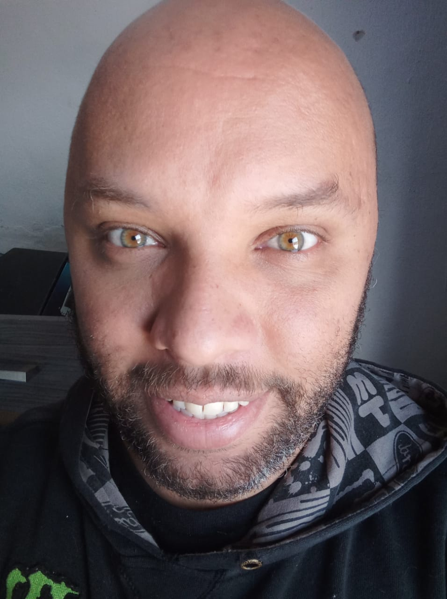

Perfil
Quem é o Rafael ?
Me chamo Rafael, estou sempre procurando novidades sobre programação. Sou bastante teimoso, aquela historia que se não resolver o problema não paro^^. Gosto de video game, cerveja, anime, competição em todos os esportes/e-sport e curto aprender a cozinhar. Quando não estou programando estou lendo algo sobre e trocando ideia nos grupos do Discord. Meu gosto por tecnologia começou com o Mega Drive 3 - Jogos como: Golden Axe, Sonic, Shinobi, Tetris na fita 6Pack xD. Estilo de game que mais gosto é: RPG.
Curriculo
Experiência ProfissionalMazars Brasil - (Jul/2022)
Atividades:• N1 - N2 - Suporte à usuários locais e remoto;
• Instalações, configuração de softwares e hardware;
• Gerenciamento instalação e configuração impressoras;
Field Services N1 – Suporte à notebook, desktop.
HIS Tecnologia e Sistemas - (Nov/2021)
Atividades:
Treinamento e report from system (VitaCare - Prontuário eletrônico)
treinamento para os profissionais da área da saúde(Médicos, enfermeiras,
gerentes, farmacêuticos....)
Ferramentas: Windows, DeskTop, notebook e Tablets.
Graphis Comunicação Estratégica - (06/novembro/2017 - 05/janeiro/2019)
Atividades: Análise de acesso, tempo de resposta do servidor, organização de chamados, distribuição de atividades e pré- análise de erros.
Utilizava: Linux (Mint), Git, GitHub, Trello e Google, HTML, CSS.
InterConnect Brasil Ltda - (01/maio/2017 - 12/novembro/2017)
Atividades: N1 - N2 - Suporte à usuários locais e remoto, ferramentas do Windows,
manutenção a hardware e atendimento especializado.